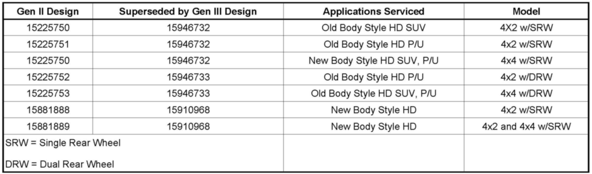
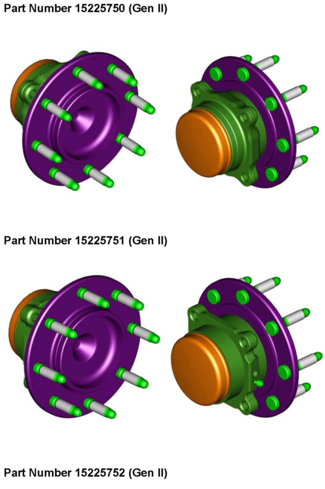
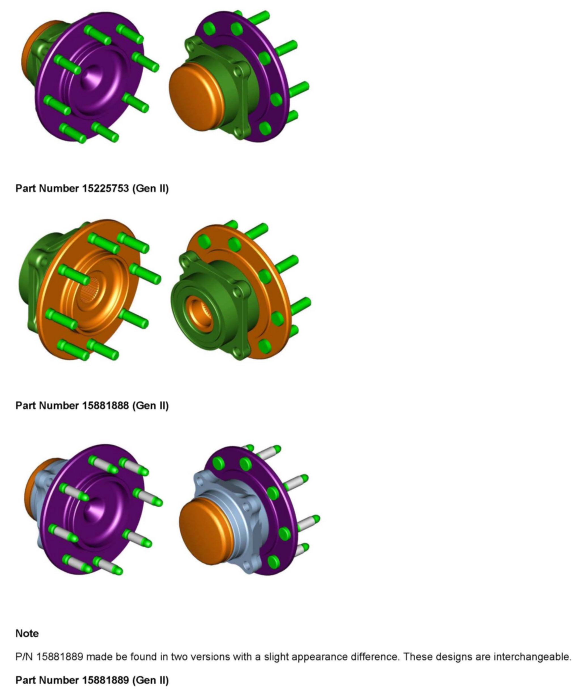
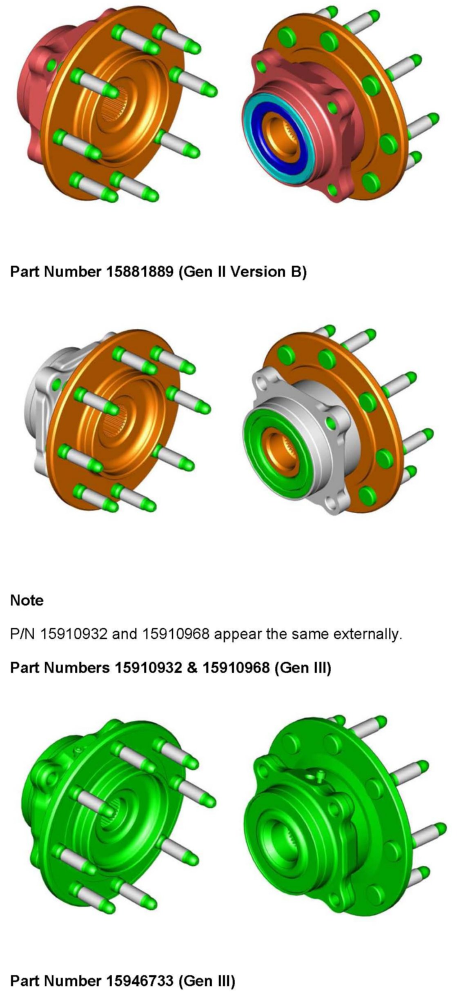
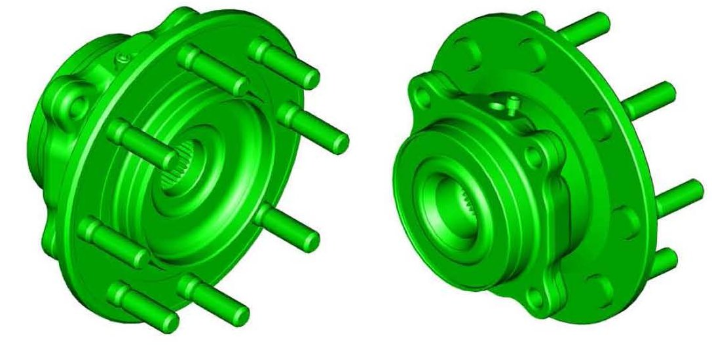

Drivetrain - Gen II Vs. Gen III Wheel Hub Changes
INFORMATIONBulletin No.: 08-03-08-003A
Date: March 02, 2009
Subject:
Wheel Hub Changes - Gen III vs. Gen II
Models:
2008 and Prior Cadillac Escalade Models
2008 and Prior Chevrolet Avalanche, Silverado, Silverado Classic, Suburban, Tahoe
2008 and Prior GMC Sierra, Sierra Classic, Yukon Models
Supercede:
This bulletin is being revised to update the parts information in the table and to add an Illustrated Hub Gallery depicting all wheel hub part numbers called out below for visual identification purposes. Please discard Corporate Bulletin Number 08-03-08-003 (Section 03 - Suspension).
General Motors Vehicle Engineering has introduced a new design Gen III front wheel hub for the above listed vehicles that replaces the Gen II product.
These Gen II 4x2 and 4x4 applications that were previously serviced by seven part numbers are now serviced by three Gen III part numbers.
Concerns have been expressed by technicians regarding the use of the new supersessions and whether the Gen III hubs will properly fit the vehicles being serviced, especially because of visual and functional differences (splines). This bulletin has been developed to address those concerns.

Please refer to the table above for information on the Gen III replacement part for each Gen II application. At the end of the bulletin you will find an illustrated "Hub Gallery" with graphic depictions of both Gen II and replacement style Gen III parts. Using these illustrations you should be able to identify both the Gen II and Gen III wheel hubs.
Warning
If replacing wheel studs, please refer to the GM Parts Catalog for the correct stud part number for each application. Different types of studs are used depending on the wheel hub application.
When replacing an older Gen II design 4x2 hub with a new 4x2/4x4 common Gen III hub, it is acceptable to have a bearing with splines on it for a 4x2 application that previously did not. However, the older Gen II design 4x4 hubs should NOT be used on a 4x2 vehicle. The Gen II 4x4 hub relies on the tension of the wheel drive shaft joint to hold everything together. The roll form feature on the inboard side of the new 4x2/4x4 Gen III hub eliminates this concern.
The only hub that is not back serviceable is P/N 15719007 (not pictured) for 1999-2000 C25 applications due to a different hub flange to bearing flange offset.
Important:
Only the new part numbers referenced in this bulletin are interchangeable between the 4x2 and 4x4 applications with the exception of P/N 15719007 (Not Shown). Under no circumstances should any other 4x4 hub be used in a 4x2 application.
Illustrated Hub Gallery




The wheel hubs illustrated above are intended to provide enough visual details to identify subtle differences between the Gen II and Gen III replacement hubs. The various colors used in the graphics are not indicative of any difference or feature, but are used to increase the detail and clarity of the assembly.
The associated part number is listed with each illustration. Please refer to the chart above for the specific application for each hub.
Please note the following when referring to a specific illustration:
^ When using the illustrations for back to back comparisons of two hubs, the most obvious differences are visible on the back side of the hubs.
^ The most common area of physical difference are in the shape of the four mounting bosses and their surrounds.

Disclaimer